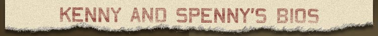
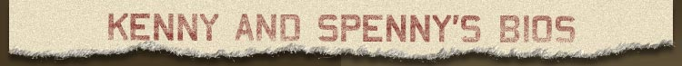
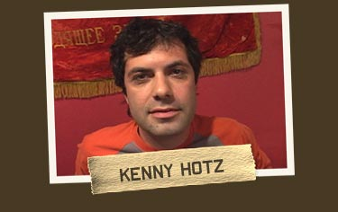
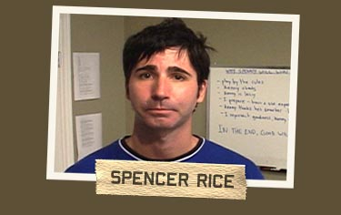
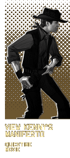
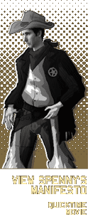

|
 |
|  |
| |
 Kenny is the middle child of two wonderful parents who did not deserve the aggravation. At three years of age he inadvertently chopped off the top of his index finger in a bicycle. He still swears that Spenny had something to do with it! At the age of eight, while impersonating Evil Knievel at his older brother's birthday party, Kenny jumped a ramp on his Big Wheel that left a scar on his chin. Realizing it was safer, Kenny cleverly moved from abusing himself to abusing Spenny. Like most pals, Kenny and Spenny have always competed against one another. Kenny sees every contest as a way to have fun, get things for free, meet girls and humiliate his pal on national television. He feels that he can beat Spenny "fair and square" but admits that would take all the fun out of it. Kenny loves to compete against Spenny, because Spenny is an only child and isn't used to sibling rivalry. "I'm like the tormenting brother he never had and probably didn't want." Spenny thinks that Kenny sometimes cheats, but Kenny feels that he’s
actually intellectually outsmarting his neurotic pal. "I'm not a
cheater. Every stunt I pull is legal -- most of the time." Kenny
enjoys taking the easy way out and watching Spenny bust his butt to win.
"I use Spenny's tactics against him and let him destroy himself."
Kenny feels that Spenny deserves what he gets. "Spenny knows me better
than anyone. He knows what he's up against. Don't feel sorry for him -
feel sorry for me for having to waste my time crushing him." |

Spencer "Spenny" Rice was born in Toronto. He’s a stress case who sees life as an enormous struggle ending in a dark and empty nothingness. With great difficulty he has tried to find a reason for his existence. He has spent his life in conflict with himself, always trying to be the best person he can, under horrific circumstances. Unlike Kenny, he believes that only through suffering can he achieve fleeting moments of joy and happiness. Unbelievably, he manages to get out of bed almost every morning. He started competing at a young age with his ever-devious best friend,
Kenny. The two competed over everything and it became an obsession for
Spenny to beat Kenny without compromising his principles. "He thinks
that winning is all that matters and I don't," says Spenny, who now
sees their silly competitions as nothing less than a biblical struggle
between good and evil. Occasionally, when he has been losing, Spenny has
tried to "bend" the rules, but found himself overwhelmed by
feelings of guilt and shame. Nonetheless, in the face of almost certain
defeat he heroically, perhaps masochistically, or most likely pathetically,
continues to engage Kenny in competition after competition. |
|
||
| Quicktime Player Information and Download |